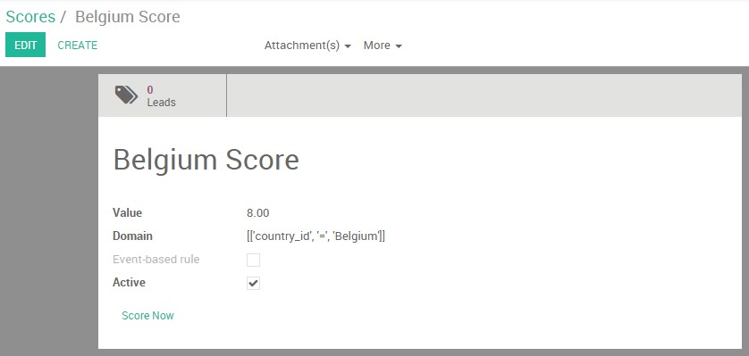
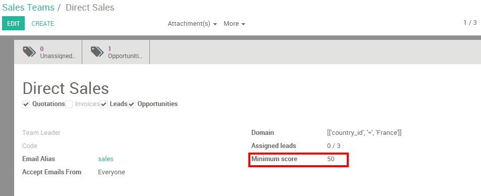

Модуль Lead Scoring в Odoo позволяет вам оценивать ваши результаты на основе определенных критериев - чем выше значение, тем больше вероятность, что перспектива «готова к продаже». Поэтому лучшие Лиды автоматически сопоставляются с вашими продавцам, поэтому их воронка продаж "не загрязняется" некачественными возможностями.
Примечание
Lead scoring является важным компонентом эффективной стратегии управления лидогенерацей. Помогая вашим продавцам определить приоритет того или иного Лида, этим вы увеличите общий коэффициент конверсии и эффективность своей команды.
Настройка
Установите модуль Lead Scoring
Начните с установки модуля Lead Scoring.
После установки модуля вы увидите новое меню

Создание правил квалификации лидов
Leads scoring позволяет вам назначить положительныt или отрицательные баллы для ваших Лидов на основе любых демографических или поведенческих критериев, которые вы установили (страна или происхождение, посещаемые страницы, тип отрасли, роль и т.д.). Для этого вам сначала нужно создать правила, которые присваивают оценку определенным критериям.
Совет
Чтобы присвоить правильный балл вашим различным правилам, вы можете использовать эти два метода:
Создайте список признаков, которыми должен обладать идеальный клиент вашей компании. Например, если вы запускаете бизнес в Калифорнии, Лид из Сан-Франциско, должен иметь более высокий балл, чем Лид из Нью-Йорка, т.к. Сан-Франциско - находится ближе.
Проанализируйте данные, чтобы выявить характеристики, которыми обладают ваши закрытые возможности и наиболее важные клиенты.
Обратите внимание, что это не точная наука, поэтому вам потребуется время и обратная связь от ваших торговых команд, чтобы адаптировать и точно настроить свои правила до получения желаемого результата.
В меню Scoring Rules выберите Создать, чтобы записать свое первое правило.
Сначала введите свое правило, затем введите значение и домен (обратитесь к официальной документации python для получения дополнительной информации). Например, если вы хотите назначить 8 баллов всем Лидам из Бельгии, вам нужно указать 8` как **значение** и ``[['country\_id',=,'Belgium']] как домен.
Совет
Вот некоторые критерии, которые вы можете использовать для построения правила подсчета баллов:
Страна происхождения :
'country_id'Этап цикла продаж:
'stage_id'Адрес электронной почты (например, если вы хотите учитывать профессиональные адреса электронной почты):
'email_from'Посещенная страница: [UNKNOWN NODE problematic]'score_pageview_ids.url'`
Название маркетинговой кампании:
'campaign_id'
После того, как вы активируете свои правила, Odoo даст значение всем вашим новым входящим Лидам. Это значение можно найти непосредственно в списке Лидов.

Присвоить высокий scoring leads для ваших команд продаж
Следующим шагом будет автоматическое преобразование ваших лучших Лидов в возможности. Чтобы это сделать, вам нужно решить, какой минимальный балл должен быть передан данной группе продаж. Перейдите в свою панель управления продажами и нажмите кнопку More в желаемой группе продаж, а затем на Настройки. Введите значение в поле Минимальный балл.
В приведенном выше примере команда Direct Sales получит Лидов с минимальным баллом 50. Лиды с более низким счетом могут либо остаться на стартовом этапе, либо быть назначены другой команде по продажам, которой установлен другой минимальный балл.
Совет
Организуйте встречу между отделами маркетинга и продаж, чтобы согласовать свои цели и какой минимальный балл допускать в отдел продаж.